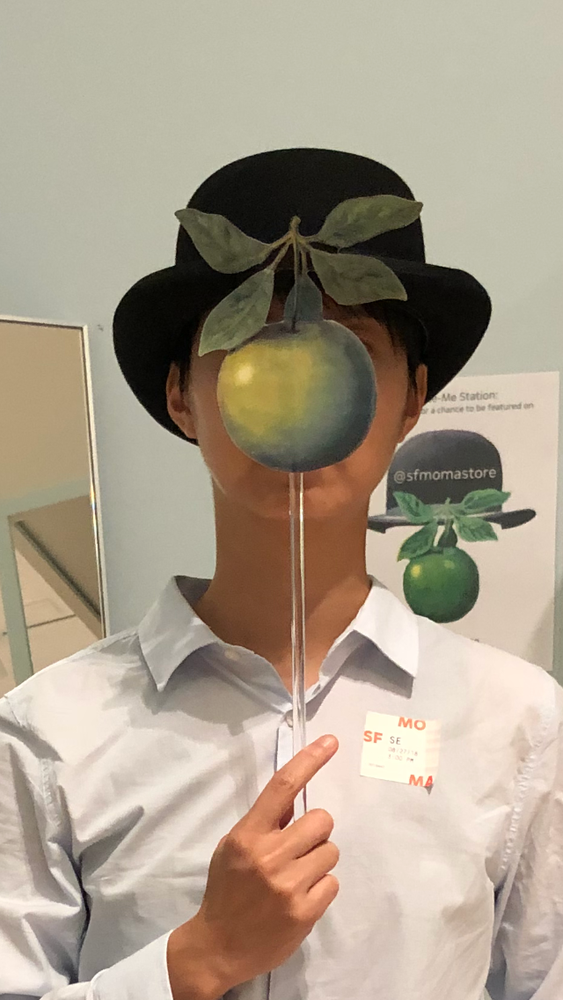

Hi there,
I am currently a student at Ada Developer Academy. Before I went to Ada, I was a Project Coordinator in a startup software company in the Bay Area.
As a Project Coordinator, I sharpened my skills in cross-functional collaboration, problem-solving, and critical thinking. Working alongside engineers, the inability to understand programming triggered my interest in learning to code. The more I researched and understood, the more I desired to be one of the programmers.
I always have a love for hands-on creating and coding is exactly that. With full creative freedom in programming, I am excitedly looking forward to exercising my coding skills to create tools or software that will improve human lives in different aspects. Lastly, I want to be able to inspire women in coding and reinforce the power of women and gender diversity in the Tech Industry.